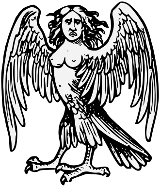
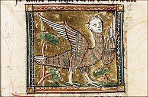

Vol. 1: Mitologia Griega
La Harpia
Las arpías o harpías son un tipo de monstruos femeninos con naturaleza mixta de pájaro y mujer. En la mitología griega las harpías eran originalmente seres con apariencia de hermosas mujeres aladas, cuyo cometido principal era hacer cumplir el castigo impuesto por Zeus a Fineo: valiéndose de su capacidad de volar, robaban continuamente la comida de aquel antes de que pudiera tomarla. Esto las llevó a pelear contra los argonautas.


Según algunos relatos existen docenas de arpías, mientras que según otros hay entre una y cuatro. Por ejemplo, Hesíodo (en torno a 700 a.C.) menciona dos arpías por su nombre en su Teogonía: Aelo (tormenta) y Ocipete (la que vuela rápido), mientras que Homero (en torno a 750 a.C.) menciona a una por su nombre: Podarge (de pies ligeros) en la Odisea. En la Eneida, el poeta romano Virgilio (70-19 a.C.) presenta a una cuarta, Celeno (nube de tormenta).
Harpias y Sirenas
La iconografía de harpías y sirenas en el arte antiguo ha generado debates entre arqueólogos e historiadores por su similitud formal: ambas son seres híbridos, mitad mujer y mitad ave, y aparecen en cerámicas y esculturas de la Grecia antigua. Sin embargo, su lenguaje simbólico y su función mitológica difieren significativamente. Las harpías suelen asociarse con la justicia divina y los castigos, mientras que las sirenas están ligadas a la seducción y el engaño, atrayendo a los marineros hacia la perdición.